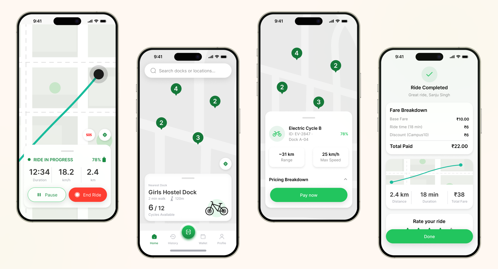

Making campus commutes effortless from the first tap.
Walking across a sprawling university campus between hostels, lecture blocks, and labs takes 15–20 minutes each way. Velo is a student-first EV cycle and scooter rental app built to replace long walks and manual key-based rentals with instant QR unlocking, real-time dock radar, and student-friendly micro-tariffs.
Manual logs & unpredictable availability
Students frequently run late between morning lectures because campus transit is either unavailable or relies on physical keys, paper registers, and guesswork around whether a cycle is actually parked at a stand.
Live dock telemetry & 1-tap QR unlock
A real-time campus map showing exact EV counts and battery range at every hub, paired with instant QR/NFC unlocking, a temporary "Pause Ride" lock for quick stops, and automated UPI student billing.
Understanding how students actually move on campus.
Through conversations with hostel residents and day scholars during peak 8:45 AM lecture rushes, three core patterns shaped the product architecture:
Designed for one-handed use while rushing to class.
Full Case Study Board (Personas, Flows, UI & Design System)
Scroll through the full presentation below, click the button to expand the entire board inline, or click the image for full-screen inspection.
Designing across hardware and screen
Building Velo pushed me to think beyond happy-path screens—accounting for low-battery states mid-ride, GPS drift near hostel buildings, and high-glare outdoor legibility. Combining custom 3D bike renders with a strict typographic grid helped unify the physical hardware and digital product into one language.
Explore Other Projects

E-Summit '26
Fall 2026A modern event website designed for E-Summit '26, bringing together startup culture, innovation, and entrepreneurship.

WorkMate App
Fall 2026A collaborative workspace app designed to streamline communication and project management for teams.